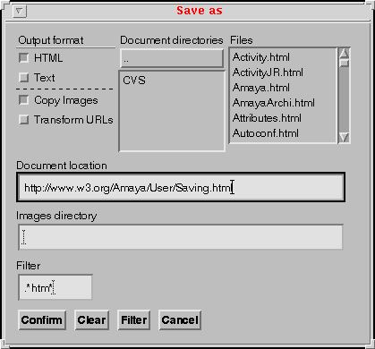

|
|
Amaya allows you to save documents either in HTML or as text format.
Remote and local saving can be accessed in two ways, through the Save and SaveAs commands.
This manual section deacribes the Publishing menu commands. In addtion, there are a number of configuration options related to Amaya that you may change through the Configuration menu.
Amaya does not provide any global view of the set of pages installed on a server. However it is possible to save files to a remote server as to local files through the Save and SaveAs commands. During these operations, Amaya takes images into account.
The save command can be invoked either by choosing Save from the File menu (control-s in Windows, control-x, control-s in Unix) or by clicking on the button. This command saves the current document to the location it was fetched from. Newly added images are saved in the same directory and no confirmation is asked except if the document name is unknown. Servers allow users to fetch a document when only the server name or the server directory name is given. This is very useful at browsing time, but it is not supported by the put method. In this case, Amaya detects that the document name is missing and proposes to use a default name or to complete the request.
If one needs to save newly added images to a different location, the Save As command should be used instead.
Selecting the Save As entry in the File menu opens a dialog box that allows you to save the current document to a different location, a remote Web server or the local file system. You can:

The items in the dialog box, from top to bottom, left to right are used as follows:
Note that this should be a complete path as there is no way to guess the name of "http://www.w3.org/pub/WWW". You should also make sure that you have the right to do a PUT method in the case of a remote location. See the page on configuring your server to accept the PUT method or ask your Web administrator.
<IMG SRC="Images/W3C.png">
This is similar in the case of a document location in the local filesystem.
<IMG SRC="Images/W3C.png">
Notes :
Amaya does not currently contact the remote server (in case of an "http://..." destination) to check whether such a document already exists.
The Save As command from the Edit menu displays a dialog box that allows you to save the current document in various formats. Clicking the Text button from the Output Format menu saves the document in text form, in a local file. A list of all URIs used in the document is appended to that file.